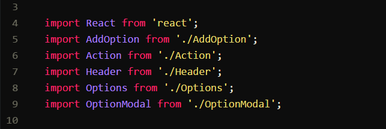
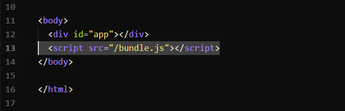
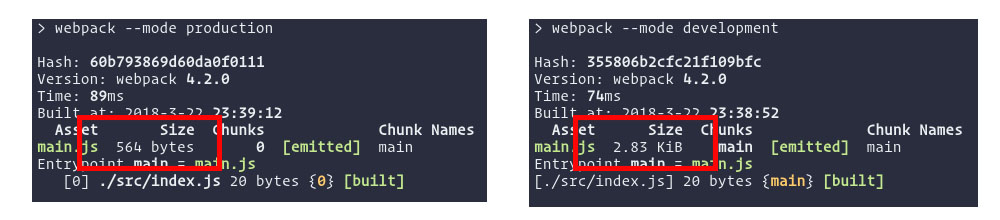
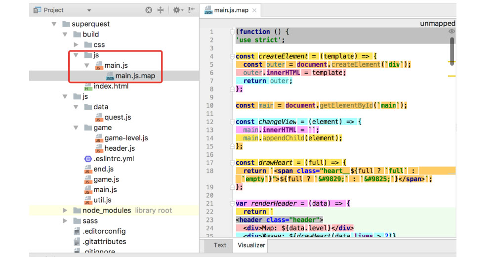

bundle.js / index.html


Advantages
- helps you bundle your resources
- managing dependencies.
- can run Babel transpilation to ES5,
allowing you to use the latest JavaScript features without worrying about browser support.
- can run a development webserver
- minification.
- can perform tree shaking.
- watches for changes and re-runs the tasks.
Common webpack.config
const path = require('path')
const fs = require('fs')
const MiniCssExtractPlugin = require('mini-css-extract-plugin')
const CopyWebpackPlugin = require('copy-webpack-plugin')
const HtmlWebpackPlugin = require('html-webpack-plugin')
const { VueLoaderPlugin } = require('vue-loader')
const PATHS = {
src: path.join(__dirname, '../src'),
dist: path.join(__dirname, '../dist'),
assets: 'assets/'
}
const PAGES_DIR = PATHS.src
const PAGES = fs.readdirSync(PAGES_DIR).filter(fileName => fileName.endsWith('.html'))
module.exports = {
externals: {
paths: PATHS
},
entry: {
app: PATHS.src,
},
output: {
filename: `${PATHS.assets}js/[name].[hash].js`,
path: PATHS.dist,
publicPath: '/'
},
optimization: {
splitChunks: {
cacheGroups: {
vendor: {
name: 'vendors',
test: /node_modules/,
chunks: 'all',
enforce: true
}
}
}
},
module: {
rules: [{
test: /\.js$/,
loader: 'babel-loader',
exclude: '/node_modules/'
}, {
test: /\.vue$/,
loader: 'vue-loader',
options: {
loader: {
scss: 'vue-style-loader!css-loader!sass-loader'
}
}
}, {
test: /\.(woff(2)?|ttf|eot|svg)(\?v=\d+\.\d+\.\d+)?$/,
loader: 'file-loader',
options: {
name: '[name].[ext]'
}
}, {
test: /\.(png|jpg|gif|svg)$/,
loader: 'file-loader',
options: {
name: '[name].[ext]'
}
}, {
test: /\.scss$/,
use: [
'style-loader',
MiniCssExtractPlugin.loader,
{
loader: 'css-loader',
options: { sourceMap: true }
}, {
loader: 'postcss-loader',
options: { sourceMap: true, config: { path: `./postcss.config.js` } }
}, {
loader: 'sass-loader',
options: { sourceMap: true }
}
]
}, {
test: /\.css$/,
use: [
'style-loader',
MiniCssExtractPlugin.loader,
{
loader: 'css-loader',
options: { sourceMap: true }
}, {
loader: 'postcss-loader',
options: { sourceMap: true, config: { path: `./postcss.config.js` } }
}
]
}]
},
resolve: {
alias: {
'~': PATHS.src,
'vue$': 'vue/dist/vue.js',
}
},
plugins: [
new VueLoaderPlugin(),
new MiniCssExtractPlugin({
filename: `${PATHS.assets}css/[name].[hash].css`,
}),
new CopyWebpackPlugin([
{ from: `${PATHS.src}/${PATHS.assets}img`, to: `${PATHS.assets}img` },
{ from: `${PATHS.src}/${PATHS.assets}fonts`, to: `${PATHS.assets}fonts` },
{ from: `${PATHS.src}/static`, to: '' },
]),
...PAGES.map(page => new HtmlWebpackPlugin({
template: `${PAGES_DIR}/${page}`,
filename: `./${page}`
}))
],
}
Configuring webpack is painful

Webpack install.
npm init
npm install --save-dev --save-exact webpack webpack-cli
package.json
{ /*...*/
"scripts": {
"build": "webpack"
}
npm run build
Webpack configuration
module.exports = {
mode: 'development',
entry: ,
output: {},
},
module: {
/*...*/
},
plugins: [
/*...*/
],
};
The entry point
Webpack.config.js
module.exports = {
/*...*/
entry: './src/index.js'
/*...*/
}
module.exports = {
//...
entry: {
home: './home.js',
about: './about.js',
contact: './contact.js'
}
};
The output
Webpack.config.js
const path = require('path');
module.exports = {
/*...*/
output: {
path: path.resolve(__dirname, 'dist'),
filename: 'app.js'
}
/*...*/
}
Set mode 'development'
module.exports = {
mode: 'development'
}
webpack --mode=development
new webpack.EnvironmentPlugin({
NODE_ENV: 'development', // use 'development' unless process.env.NODE_ENV is defined
DEBUG: false
});
'production' vs 'development' (mode)

Loaders
webpack.config.js
module: {
rules: [
{
test: /\.s[ac]ss$/i,
use: [
'style-loader', // 3. inject styles into DOM
'css-loader', // 2. convert css into common.js
'sass-loader', // 1. convert scss into css
],
}
],
}
Handling images
Webpack.config.js
module.exports = {
/*...*/
module: {
rules: [
{
test: /\.(png|svg|jpg|gif)$/,
use: [
'file-loader'
]
}
]
}
/*...*/
}
Handling images
someModule.js
import Icon from './icon.png'
const img = new Image()
img.src = Icon
element.appendChild(img)
Loaders
webpack.config.js
module.exports = {
/*...*/
module: {
rules: [
{
test: /\.js$/,
exclude: /(node_modules|bower_components)/,
use: {
loader: 'babel-loader',
options: {
presets: ['@babel/preset-env']
}
}
}
]
}
/*...*/
}
Plugins
const HtmlWebpackPlugin = require('html-webpack-plugin');
module.exports = {
/*...*/
plugins: [
new HTMLWebpackPlugin()
]
/*...*/
}
module.exports = {
/*...*/
plugins: [
new HtmlWebpackPlugin({
template: `./src/index.html`
})
]
/*...*/
}
Source-map
webpack.config.js
module.exports = {
/*...*/
devtool: 'source-map',
/*...*/
}
Webpack.config.js
source-maps
